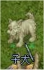

画像にリンクがはってあるものは、クリックすると別窓で大きめサイズが表示されます。
[ガードマン]
所在地；リヒタルゼン・レッケンベル本社2F |
 

|
[ガードマン]
所在地；リヒタルゼン・レッケンベル本社2F |
 |
[ガイ神父]
所在地；カピトーリナ修道院建物内(monk_in:18,38) |
   |
[カイン]
所在地；飛行船（シュバルツバルド国内線・屋内） |
   |
[科学者]
所在地；アインブロック研究所内 |
   |
[カヌー]
所在地；ミョルニール山脈01(mjolnir_01:313,269) |
   |
[カルヴィン]
所在地；カピトーリナ修道院建物内(monk_in:103,176) |
  |
[カルカタン]
所在地；ウンバラ北西室内 |
   |
[眼光の鋭い議員]
所在地；リヒタルゼン・レッケンベル本社1F右(32,22)付近 |
   |
[騎士団募集官]
所在地；プロンテラ騎士団建物内 |
   |
[ギ ソンチョル]
所在地；コンロン建物内 |
   |
[クトルラナックス]
所在地；氷の洞窟03(ice_dun03) |
[グロリア]
所在地；カピトーリナ修道院(219,164) |
   |
[ケージ]
所在地；飛行船（シュバルツバルド国内線）室内 |
  |
[警備兵]
所在地；次元の狭間01(moc_fild20:349,179) |
   |
[ゲロルド・ギルナー]
所在地；アインブロックホテルの隣の建物内 |
   |
[子犬]
所在地；ブラジリスフィールド01(bra_fild01) |
  |
[坑夫の歌]
アインベフの坑夫達が歌う歌。 |
[広報員]
所在地；プロンテラ6時方向 |
   |
[広報員]
所在地；アルデバラン中央左(127,138) |
 |
[広報員]
所在地；ゲフェン南カプラ左(90,67) |
 |
[広報員]
所在地；イズルード中央左上(99,136) |
 |
[凍りついた少年]
所在地；氷の洞窟04 |
   |
back
(c) Gravity Co., Ltd. & Lee MyoungJin(studio DTDS). All rights reserved.
(c) GungHo Online Entertainment, Inc. All Rights Reserved.
当コンテンツの再利用（再転載・配布など）は、禁止しています。